06. Divider Circuits And Kirchhoff's Laws
Voltage Divider Circuits
Let’s analyze a simple series circuit and determine the voltage drops across individual resistors:

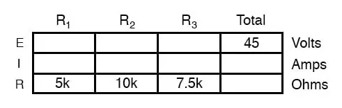
From the given values of individual resistances, we can determine a total circuit resistance, knowing that resistances add in series:
Determine the Total Circuit Resistance
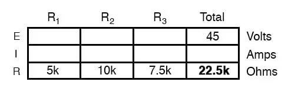
From here, we can use Ohm’s Law (I=E/R) to determine the total current, which we know will be the same as each resistor current, currents being equal in all parts of a series circuit:
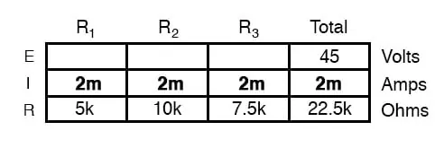
Use Ohm’s Law to Calculate Current
Now, knowing that the circuit current is 2 mA, we can use Ohm’s Law (E=IR) to calculate the voltage across each resistor:
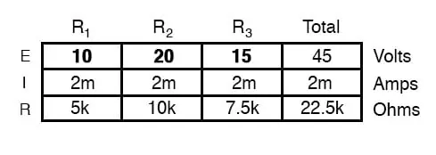
It should be apparent that the voltage drop across each resistor is proportional to its resistance, given that the current is the same through all resistors. Notice how the voltage across R2 is double that of the voltage across R1, just as the resistance of R2 is double that of R1.
If we were to change the total voltage, we would find this proportionality of voltage drops remains constant:
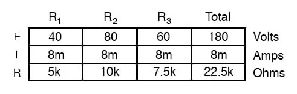
Solving for Voltage Drop Ratios
The voltage across R2 is still exactly twice that of R1‘s drop, despite the fact that the source voltage has changed. The proportionality of voltage drops (ratio of one to another) is strictly a function of resistance values.
With a little more observation, it becomes apparent that the voltage drop across each resistor is also a fixed proportion of the supply voltage. The voltage across R1, for example, was 10 volts when the battery supply was 45 volts. When the battery voltage was increased to 180 volts (4 times as much), the voltage drop across R1 also increased by a factor of 4 (from 10 to 40 volts). The ratio between R1‘s voltage drop and total voltage, however, did not change:
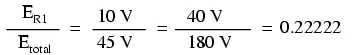
Likewise, none of the other voltage drop ratios changed with the increased supply voltage either:
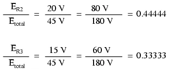
Voltage Divider Formula
For this reason, a series circuit is often called a voltage divider for its ability to proportion—or divide—the total voltage into fractional portions of constant ratio. With a little bit of algebra, we can derive a formula for determining series resistor voltage drop given nothing more than total voltage, individual resistance, and total resistance:
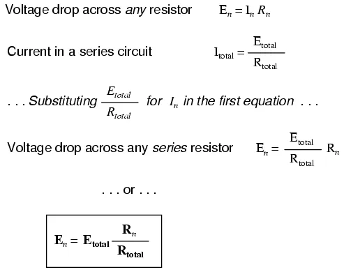
The ratio of individual resistance to total resistance is the same as the ratio of individual voltage drop to the total supply voltage in a voltage divider circuit. This is known as the voltage divider formula, and it is a short-cut method for determining voltage drop in a series circuit without going through the current calculations of Ohm’s Law.
Example of Using Voltage Divider Formula
Using this formula, we can re-analyze the example circuit’s voltage drops in fewer steps:
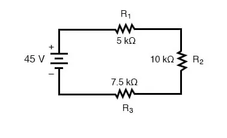
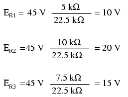
Voltage - Dividing Components
Voltage dividers find wide application in electric meter circuits, where specific combinations of series resistors are used to “divide” a voltage into precise proportions as part of a voltage measurement device.
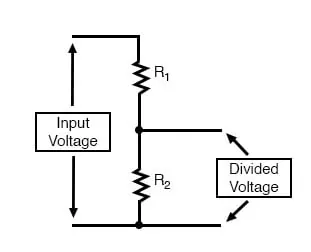
Potentiometers as Voltage-Dividing Components
One device frequently used as a voltage-dividing component is the potentiometer, which is a resistor with a movable element positioned by a manual knob or lever. The movable element, typically called a wiper, makes contact with a resistive strip of material (commonly called the slidewire if it is made of resistive metal wire) at any point selected by the manual control:
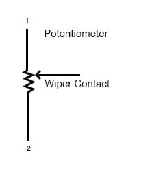
The wiper contact is the left-facing arrow symbol drawn in the middle of the vertical resistor element. As it is moved up, it contacts the resistive strip closer to terminal 1 and further away from terminal 2, lowering resistance to terminal 1 and raising resistance to terminal 2. As it is moved down, the opposite effect results. The resistance as measured between terminals 1 and 2 is constant for any wiper position.
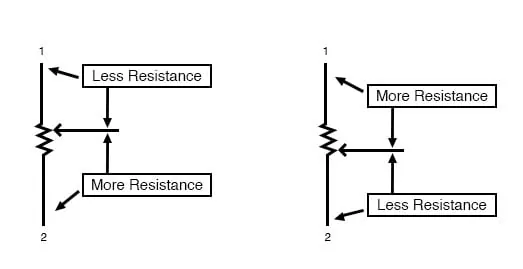
Rotary vs. Linear Potentiometers
Shown here are internal illustrations of two potentiometer types, rotary and linear.
Linear Potentiometers
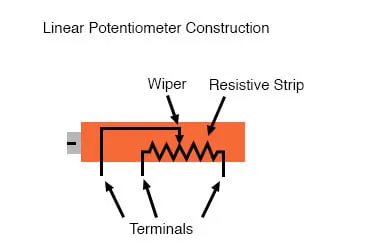
Some linear potentiometers are actuated by straight-line motion of a lever or slide button. Others, like the one depicted in the previous illustration, are actuated by a turn-screw for fine adjustment ability. The latter units are sometimes referred to as trimpots because they work well for applications requiring a variable resistance to be “trimmed” to some precise value.
It should be noted that not all linear potentiometers have the same terminal assignments as shown in this illustration. With some, the wiper terminal is in the middle, between the two end terminals.
Rotary Potentiometer
The image below shows the body construction of a rotary potentiometer.
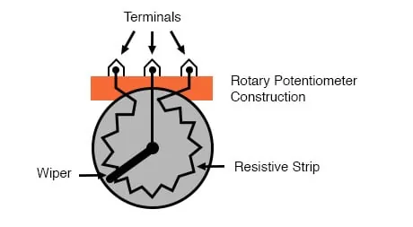
The following photograph shows a real, rotary potentiometer with exposed wiper and slidewire for easy viewing. The shaft which moves the wiper has been turned almost fully clockwise so that the wiper is nearly touching the left terminal end of the slidewire:
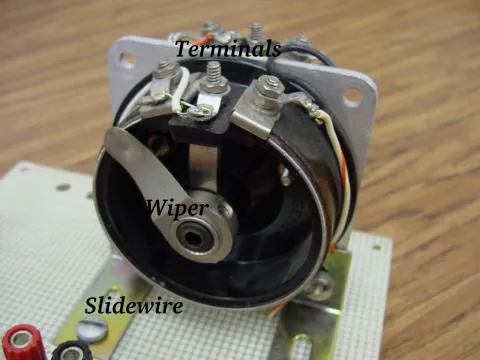
Here is the same potentiometer with the wiper shaft moved almost to the fully counterclockwise position so that the wiper is near the other extreme end of travel:
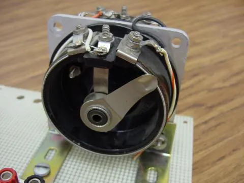
Effects of Adjustments in a Potentiometer in a Circuit
If a constant voltage is applied between the outer terminals (across the length of the slidewire), the wiper position will tap off a fraction of the applied voltage, measurable between the wiper contact and either of the other two terminals. The fractional value depends entirely on the physical position of the wiper:
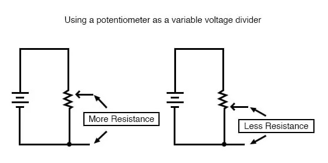
The Importance of Potentiometer Application
Just like the fixed voltage divider, the potentiometer’s voltage division ratio is strictly a function of resistance and not of the magnitude of the applied voltage. In other words, if the potentiometer knob or lever is moved to the 50 percent (exact center) position, the voltage dropped between the wiper and either outside terminal would be exactly 1/2 of the applied voltage, no matter what that voltage happens to be, or what the end-to-end resistance of the potentiometer is. In other words, a potentiometer functions as a variable voltage divider where the voltage division ratio is set by wiper position.
This application of the potentiometer is a very useful means of obtaining a variable voltage from a fixed-voltage source such as a battery. If a circuit you’re building requires a certain amount of voltage that is less than the value of an available battery’s voltage, you may connect the outer terminals of a potentiometer across that battery and “dial-up” whatever voltage you need between the potentiometer wiper and one of the outer terminals for use in your circuit:
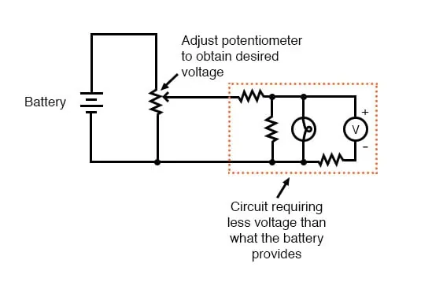
When used in this manner, the name potentiometer makes perfect sense: they meter (control) the potential(voltage) applied across them by creating a variable voltage-divider ratio. This use of the three-terminal potentiometer as a variable voltage divider is very popular in circuit design.
Samples of Small Potentiometers
Shown here are several small potentiometers of the kind commonly used in consumer electronic equipment and by hobbyists and students in constructing circuits:
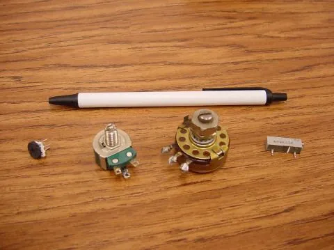
The smaller units on the very left and very right are designed to plug into a solderless breadboard or be soldered into a printed circuit board. The middle units are designed to be mounted on a flat panel with wires soldered to each of the three terminals. Here are three more potentiometers, more specialized than the set just shown:
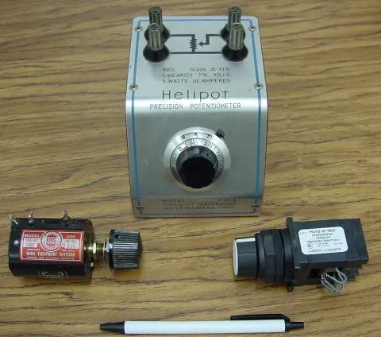
The large “Helipot” unit is a laboratory potentiometer designed for quick and easy connection to a circuit. The unit in the lower-left corner of the photograph is the same type of potentiometer, just without a case or 10-turn counting dial. Both of these potentiometers are precision units, using multi-turn helical-track resistance strips and wiper mechanisms for making small adjustments. The unit on the lower-right is a panel-mount potentiometer, designed for rough service in industrial applications.
REVIEW:
- Series circuits proportion, or divide, the total supply voltage among individual voltage drops, the proportions being strictly dependent upon resistances: ERn = ETotal (Rn / RTotal)
- A potentiometer is a variable-resistance component with three connection points, frequently used as an adjustable voltage divider.